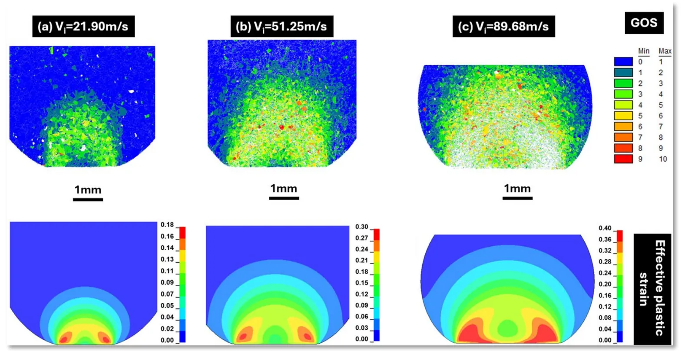
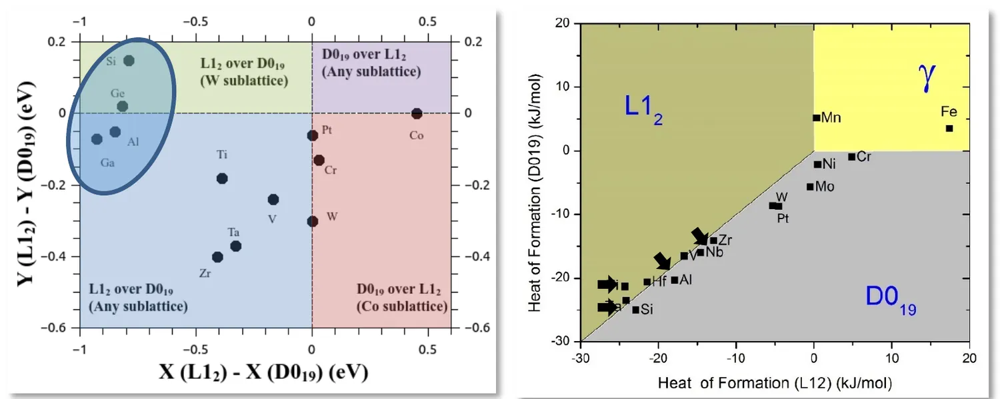
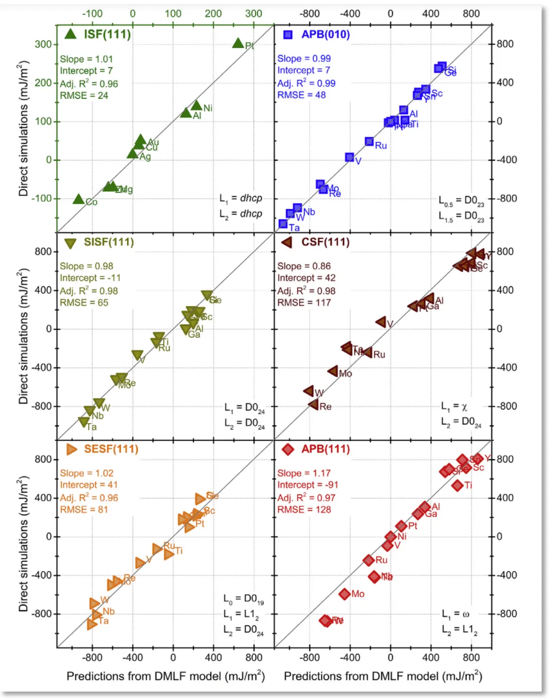
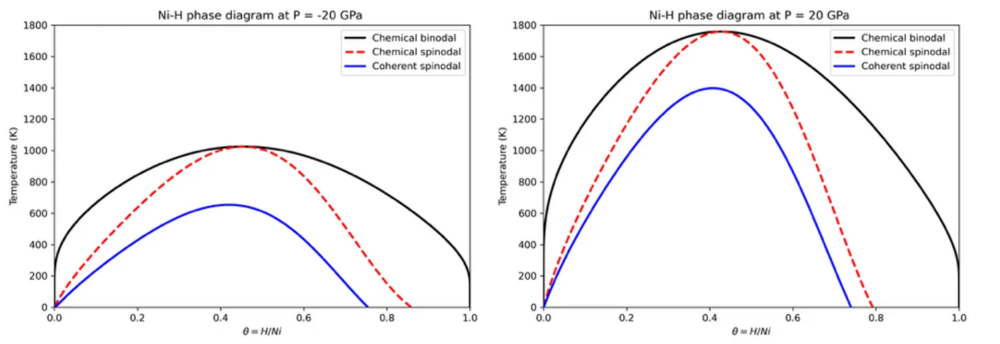

Broad areas of research
High strain rate deformation and impact
Armour laminates, impact of metal spheres, and constitutive models for high strain rates.
Read moreHigh strength and high temperature alloys
Design of nickel- and cobalt-base superalloys, titanium alloys and steels.
Read moreCrystal defects
Planar fault energies, grain boundaries and phase stability.
Read moreHigh strain rate deformation and impact
- Metal–intermetallic laminates. We developed lightweight diffusion-bonded Al–Al3Ti laminates for armour, with dynamic energy absorption and ballistic penetration resistance about 20% higher than commercial aluminium alloys. Work of N. Mohan Kumar.
- Normal and oblique impact. We studied how ductile spheres (copper, brass) deform when they strike rigid targets at high velocity. Our contact model predicts dynamic plastic deformation, energy dissipation and restitution, and extends to high-velocity friction and material transfer. Work of Dr. Sazid Khan.
- Strain hardening at high strain rates. We developed physics-based constitutive models of high-strain-rate hardening that include twinning, recrystallization, dislocation activity and strong initial texture, particularly in hcp metals such as magnesium and titanium (Dr. Biswaranjan Dash). Earlier, we studied bcc metals such as Ta under severe plastic deformation (Dr. Hindol Bandyopadhyay).
- Constitutive models. We have developed and validated high-strain-rate constitutive models for over 50 alloys used in automotive, defence and aerospace applications.


Design of high strength and high temperature alloys
- Nickel-base superalloys. We designed Re- and Ru-free or lean compositions with CALPHAD, cast them as directionally solidified bars, and tested them for microstructure, phase equilibria and creep. An important by-product is a set of high-throughput models for planar fault energies in pseudobinary and multicomponent A3B intermetallics. Work of Dr. K.V. Vamsi.
- Cobalt-base superalloys. Alloys with a stable γ/γ′ microstructure are rare in the Co system. We developed alloys with this microstructure, and used DFT, discrete dislocation dynamics and finite-element models to explain their yield strength anomaly. Work of Dr. Shailendra Kumar Verma.
- Titanium alloys and γ-TiAl intermetallics. With Prof. Dipankar Banerjee’s group, we studied intermediate-temperature creep and dynamic strain ageing in near-α alloys such as IMI 834, including the role of solute segregation and jogged-screw dislocations (Dr. Priyanka Agrawal), and the effect of stress orientation on microstructural evolution during creep of γ-TiAl (Dr. Prasath Babu).
- Steels. We studied nanoscale copper clustering in Cu-strengthened 304H stainless steel by atom probe tomography, and linked it to strength and stability at high temperature (Dr. Aparajita Pramanik). With DMRL, we also developed ultra-high-strength secondary-hardening steels for landing gear, with strength well above 2 GPa (Dr. Veerababu Rowthu).

Crystal defects
- Planar fault energies. We developed high-throughput models that predict planar fault energies across A3B intermetallics, linking composition to fault energy, dislocation core dissociation and the yield strength anomaly.
- Role of grain boundary character. We studied the segregation of solutes and point defects to grain boundaries in Al, and its effect on grain boundary diffusion and intergranular cavitation (Dr. Subham Mridha). With Prof. Atul Chokshi’s group, we simulated grain boundary sliding and its tension–compression asymmetry in Al by molecular dynamics (Dr. Rajesh Korla). We also examined grain boundaries as sinks and sources of point defects during radiation damage, and their role in Frenkel defect recombination in vanadium (Dr. U. Sai Babu).
- Phase stability in alloy systems. Our DFT and phase-field models give stress-dependent phase diagrams that predict stress-assisted spinodal decomposition and hydride precipitation in the Ni–H system (Shiba Shankar Dash). With Prof. Banerjee’s group, we studied phase separation in ternary Ni–Co–Pd alloys (Shalini Roy Koneru).


Current areas of research
- Erosion. We are studying solid-particle and water-droplet erosion of turbomachinery components, including in hydrogen environments (Dapulou Joseph).
- Machine learning for high-velocity impact. We are using AI/ML to speed up constitutive model development, and to infer material behaviour from a deformed projectile (Anjali Mandal and Prasant Kumar Sahay, assisted by Vaishali Prasanna).
- Rare-earth-lean permanent magnets. We are applying our phase-stability and defect-control approach to a new problem for us, the processing and phase stability of rare-earth-lean permanent magnets (Prince Parimal, assisted by Saem Ahmed).
- AI-guided alloy design. We are coupling AI/ML with CALPHAD, fault-energy and solute–defect models to design Re- and Ru-lean superalloys and recycled aluminium alloys (Abhijeet Mohanta).
- Hydrogen embrittlement. We are developing kinetic models of hydrogen trapping at dislocations and grain boundaries, linked to embrittlement of components for a hydrogen economy.
Collaborations
Within IISc, we have worked with the groups of Prof. Dipankar Banerjee and Prof. Atul Chokshi. We collaborate extensively with Garrett Motion, and have worked with Pratt & Whitney, General Motors, Tata Steel, GTRE and DMRL. We are about to start an Indo-French project on hydrogen embrittlement, funded by CEFIPRA, with Prof. Michel Coret of Centrale Nantes, France.